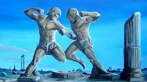
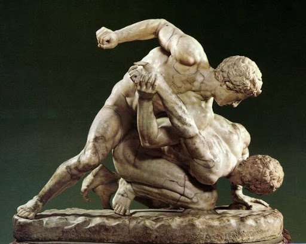
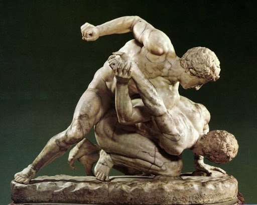

Las Artes Marciales Mixtas (MMA) tienen sus raíces en antiguas tradiciones de lucha y se popularizaron en la década de 1990 con la creación del Ultimate Fighting Championship (UFC). A lo largo de los años, las MMA han evolucionado, se han regulado y han ganado aceptación global como un emocionante deporte de combate que combina una variedad de disciplinas marciales.
 
Volver a la página principal

Volver a la página principal